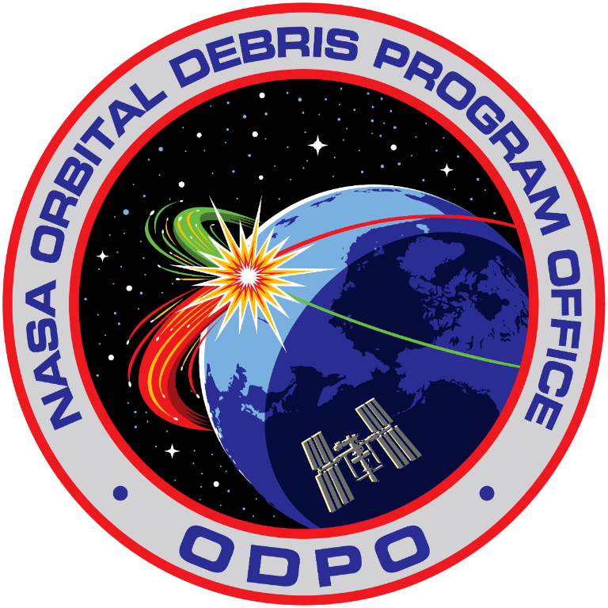

About the Author
Who am I: Hi, I’m Kingston Dempsey, a high school junior who loves the idea of combining astrophysics, aerospace engineering, and computer science. Unlike many space exploration missions that take lifespans to achieve, Kessler Syndrome is an urgent issue that can be solved within our generation. The topic initially interested me with how perfectly it combines theoretical physics and mechanical engineering, without being something irrelevant to the people; it is a real environmental protection issue in space. I built this website to raise awareness about space debris, break down the mechanics behind it, and showcase realistic models that neither exaggerate nor downplay the gravity of the situation. I want to show that while the problem is technical, it starts with policy changes and public advocacy. I hope this project inspires you to join the conversation about protecting our extraterrestrial future.
Scientific Context & Institutional Research
How they helped: When I started this project, I had no idea what I was getting into. I nearly decided on a different topic after seeing the math and physics behind Dr. Kessler and Dr. Cour-Palais’s paper. Without resources like NASA’s Orbital Debris Program Office and the European Space Agency (ESA), I would’ve been stuck trying to bridge the gap between my high school education and the advanced post-collegiate physics they used to describe the orbital cascade. These sources contain reservoirs of information, more than I could need, with no lack of detail, but more importantly, no lack of explanation. I likely never would have started, and definitely never would have finished this project without consulting NASA and the ESA, so I want to give them my sincerest thanks for their work and their willingness to share it with the public.

Research Evolution & Special Thanks
How My Perspective Shifted
What to write here: Reflect on how personal view of space debris evolved during this project.
Write about how internal factors (digging into the physics, building models) and external factors (seeing satellite launches multiply) shifted view from seeing LEO as an abstract environment to a fragile ecosystem.
Interview & Gratitude
What to write here: Express gratitude to Dr. Crassidis for taking the time to interview.
Share how his expert insights introduced a perspective on orbital mechanics, collision risks, or engineering solutions that I had never considered before.